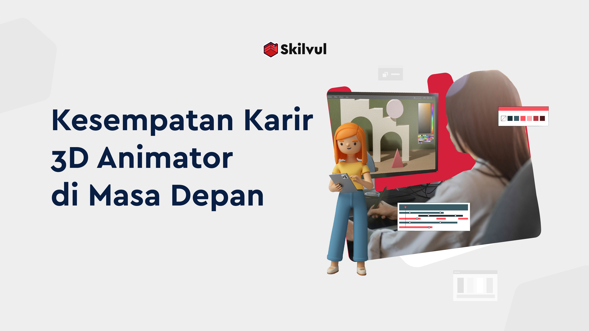
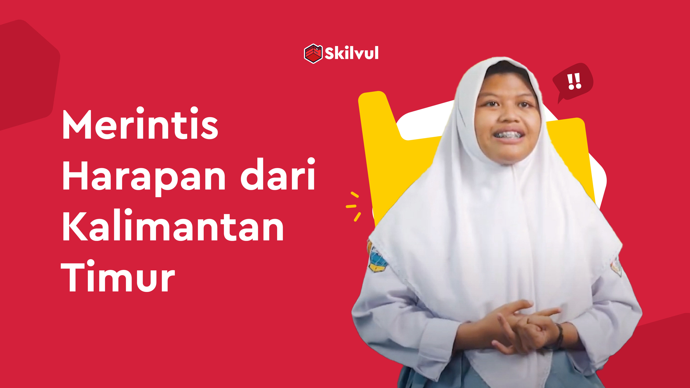

Here are some recommended blogs.
Blog

Raih Pekerjaan Impian di Tengah Keterbatasan Fisik
Keterbatasan memunculkan stigma terhadap kelompok difabel, namun menjadi individu dengan disabilitas tidak menjadikan Dolos putus asa dengan keterbatasan untuk meraih pekerjaan impiannya.

Kesempatan Karir 3D Animator di Masa Depan
Sobat Skilvul, apakah pernah terpikir dalam benak kamu kira-kira gimana ya rasanya jadi seorang 3D animator? Apakah memulai karier sebagai 3D animator di Indonesia adalah pilihan yang tepat? Yuk cari tahu jawabannya dalam artikel berikut ini!

Merintis Harapan dari Pesisir Kalimantan Timur
Cari tahu bagaimana sekelompok remaja SMA dari pesisir Muara Badak menciptakan ide solusi inovatif berbasis teknologi untuk memberantas hoax dan memberikan perubahan positif bagi komunitas mereka.